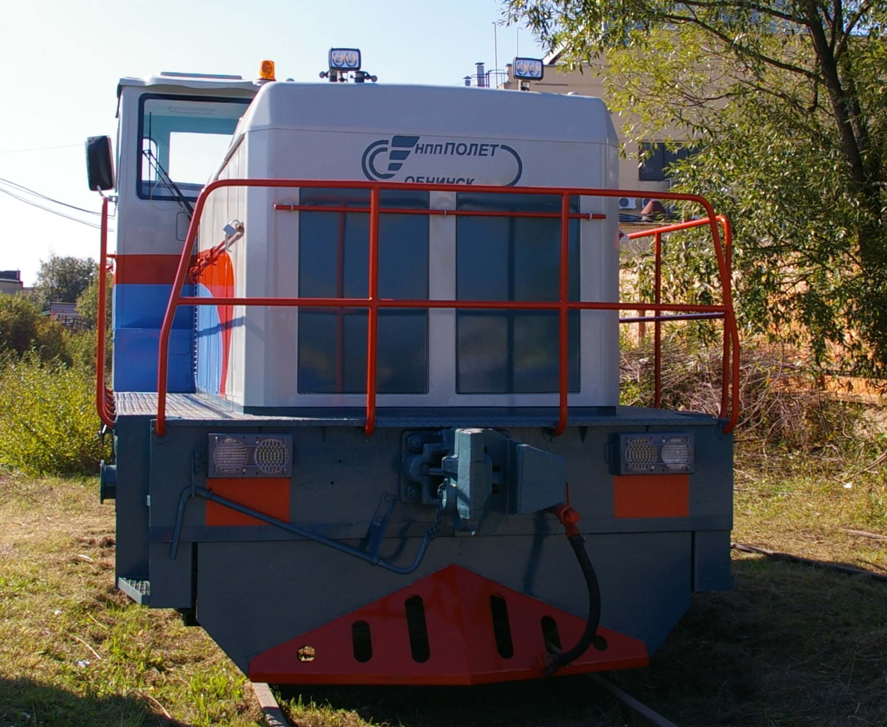
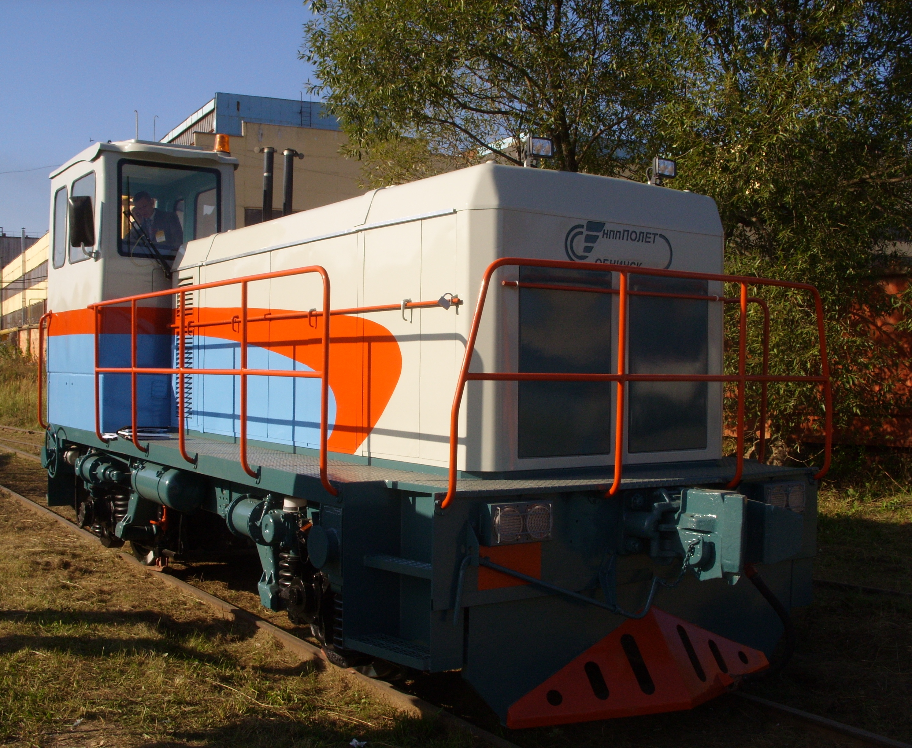

<section class="product page__global">
  <div class="product__inner">

    <h1 class="product__title page__title">Маневровые локомотивы

    </h1>
    <ul class="breadcrumb">
      <li class="breadcrumb__item">
        <a class="breadcrumb__link" href="index.html">Главная</a>
      </li>
      <li class="breadcrumb__item">
        <a class="breadcrumb__link" href="product.html">Продукция</a>
      </li>
      <li class="breadcrumb__item">
        <a class="breadcrumb__link" href="product-machine.html">Машиностроение</a>
      </li>
      <li class="breadcrumb__item">
        <a class="breadcrumb__link" href="product-machine-railroad.html">Железнодорожный транспорт</a>
      </li>
      <li class="breadcrumb__item">
        Маневровые локомотивы
      </li>
    </ul>

    <div class="wrapper">

      
          <p class="page__subtitle page__text">
            Маневровый локомотив с комбинированной (гибридной) силовой установкой ЛГМ 1
          </p>
          <div class="image__gallery">
            <div class="image__gallery-item">
              
            </div>
            <div class="image__gallery-item">
              
            </div>
          </div>
          <p class="page__text">
            Двухосный маневровый локомотив предназначен для выполнения легких маневровых и хозяйственных работ на путях колеи 1520 мм промышленных предприятий, железнодорожных станций, ремонтных предприятий, предприятий путевого хозяйства, в том числе в закрытых строениях.
          </p>
          <p class="page__text">
            Учитывая разнообразие условий эксплуатации, локомотив выполнен с использованием комбинированной (гибридной) силовой установки, которая состоит из накопителей энергии, в частности, модуля тяговых аккумуляторных батарей и дизель - генераторной установки (ДГУ), по схеме, с высокорасположенной боковой кабиной управления кругового обзора, капотного типа с минимальной высотой капотов, на короткобазной двухосной экипажной части. Компоновка локомотива выполнена по модульному принципу, с установкой модулей и блоков оборудования на раме, в отсеках капота и в подкабинном пространстве. В одном из отсеков капота расположены стеллажи для размещения поддонов с аккумуляторами.
          </p>
          <p class="page__text">
            Конструкция стеллажей обеспечивает выкатку поддона для обслуживания аккумуляторов. Отсек оборудован вытяжной вентиляцией. В других отсеках расположены блоки электрооборудования, преобразователи, электронные блоки системы управления, модуль дизель - генератора, оборудование других систем. Доступ к оборудованию осуществляется через люки, расположенные на боковых стенках тепловоза, а также при снятых капотах, что обеспечивает удобное проведение его обслуживания и ремонта.
          </p>
          <p class="page__text">
            Обе оси локомотива приводные от двух тепловозных тяговых электродвигателей. С рамой локомотива оси соединены посредством поводковых букс через пружинные комплекты с вертикальными 11 гасителями колебаний. Конструкция рамы и капотов локомотива предусматривает как минимум два варианта силовой установки: ДГУ мощностью 60 кВт и 100 кВт и модуля аккумуляторных батарей от 14З кВтч до 28 бкВтч.
          </p>
          <p class="page__text">
            Расположение кабины управления обеспечивает условия видимости и обзорности в соответствии с действующими «Санитарными нормами» при движении в обоих направлениях. Управление локомотивом производится одним машинистом.
          </p>
          <p class="page__text">
            Новый гибридный локомотив отвечает основным требованиям, предъявляемым к современным маневровым локомотивам:
          </p>
          <ul>
            <li>максимальное использование энергии на создание силы тяги;</li>
            <li>минимизация энергетических затрат на вспомогательные нужды;</li>
            <li>снижение расходов на приобретение горюче-смазочных материалов;</li>
            <li>минимизация трудовых затрат в течение жизненного цикла, включая затраты на обслуживание и ремонты всех видов;</li>
            <li>высокие экологические и эргономические качества, удовлетворяющие действующим, а также перспективным отечественным и мировым стандартам.</li>
          </ul>
          <p class="page__text">
            В эксплуатации применение локомотивов данного типа обеспечит снижение затрат на дизельное топливо не менее, чем на 40% (так как большая часть маневровой работы будет осуществляться с питанием от тяговых аккумуляторных батарей), на техническое обслуживание и ремонт, на размер платы за выбросы вредных веществ в атмосферу.
          </p>
          <p class="page__text">
            Модульный принцип агрегатирования, кроме того, позволит осуществлять замену модулей при выходе их из строя, сократив время простоя локомотива в ремонте.
          </p>
          <table class="table">
            <tr>
                <td class="table-title" rowspan="2" align="center">Наименование параметров</td>
                <td class="table-title" colspan="2" align="center">Значение параметров</td>
            </tr>
            <tr>
                <td class="table-title" nowrap="nowrap" align="center">ЛГМ 1</td>
                <td class="table-title" colspan="2" nowrap="nowrap" align="center">&nbsp;ЛГМ 1-01</td>
            </tr>
            <tr>
                <td class="table-td">Эквивалентная мощность локомотива, кВт</td>
                <td class="table-td" align="center">203(276)</td>
                <td class="table-td" colspan="2" align="center">386 (525)</td>
            </tr>
            <tr>
                <td class="table-td">Мощность дизель-генераторной установки, кВт</td>
                <td class="table-td" align="center">60</td>
                <td class="table-td" align="center">100</td>
            </tr>
            <tr>
                <td class="table-td">Энерговооруженность модуля тяговых кислотных аккумуляторных батарей, кВт/ч</td>
                <td class="table-td" align="center">143</td>
                <td class="table-td" align="center">286</td>
            </tr>
            <tr>
                <td class="table-td" nowrap="nowrap">Осевая формула</td>
                <td class="table-td" colspan="2" nowrap="nowrap" align="center">10-10</td>
            </tr>
            <tr>
                <td class="table-td">Статическая нагрузка от колесной пары на рельсы, не более, тс</td>
                <td class="table-td" colspan="2" align="center">18</td>
            </tr>
            <tr>
                <td class="table-td">Тип тяговой передачи.&nbsp;Обеспечивается одновременное и раздельное питание тяговых двигателей от ДГУ и тяговых аккумуляторных батарей</td>
                <td class="table-td" colspan="2" nowrap="nowrap" align="center">Электрическая</td>
            </tr>
            <tr>
                <td class="table-td">Диаметр колес по кругу катания, мм</td>
                <td class="table-td" colspan="2" align="center">1050</td>
            </tr>
            <tr>
                <td class="table-td" nowrap="nowrap">Ширина колеи, мм</td>
                <td class="table-td" colspan="2" nowrap="nowrap" align="center">1520</td>
            </tr>
            <tr>
                <td class="table-td">Длина по осям автосцепки, мм</td>
                <td class="table-td" colspan="2" align="center">8350</td>
            </tr>
            <tr>
                <td class="table-td" nowrap="nowrap">Габарит по ГОСТ 9238</td>
                <td class="table-td" colspan="2" nowrap="nowrap" align="center">0-ВМ</td>
            </tr>
            <tr>
                <td class="table-td">Высота горизонтальной оси автосцепки от уровня головок рельсов, мм</td>
                <td class="table-td" colspan="2" align="center">1060±20</td>
            </tr>
            <tr>
                <td class="table-td" nowrap="nowrap">Эксплуатационная скорость км/ч</td>
                <td class="table-td" colspan="2" nowrap="nowrap" align="center">20-25</td>
            </tr>
            <tr>
                <td class="table-td">Сила тяги максимальная при трогании с места, кН</td>
                <td class="table-td" align="center">96</td>
                <td class="table-td" align="center">180</td>
            </tr>
            <tr>
                <td class="table-td" nowrap="nowrap">Сила тяги расчетного режима, кН</td>
                <td class="table-td" nowrap="nowrap" align="center">40</td>
                <td class="table-td" nowrap="nowrap" align="center">76</td>
            </tr>
            <tr>
                <td class="table-td">Скорость в расчетном режиме, км/ч</td>
                <td class="table-td" align="center">5</td>
                <td class="table-td" align="center">9</td>
            </tr>
            <tr>
                <td class="table-td">Средне-эксплуатационный вес состава, т</td>
                <td class="table-td" nowrap="nowrap" align="center">500</td>
                <td class="table-td" nowrap="nowrap" align="center">9</td>
            </tr>
        </table>


    </div>
    
    

  </div>
</section>